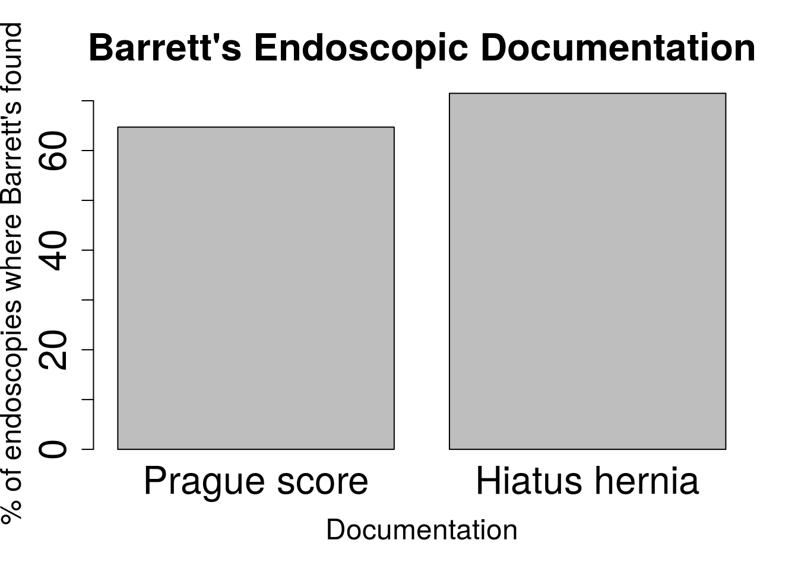
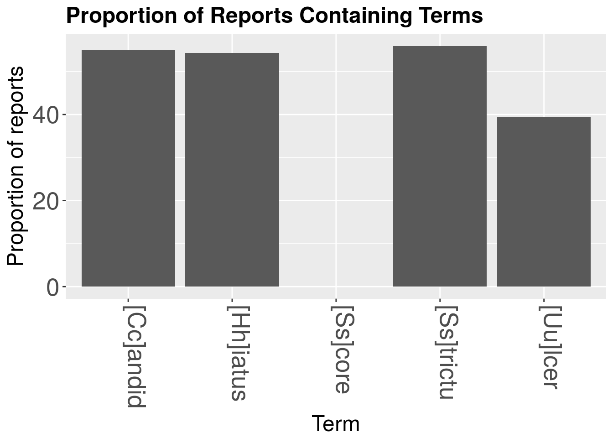

Much day to day auditing is based around performance of doctors. We struggle to do this in many different areas but procedures, and in particular endoscopy, has led the way in many respects in terms of how to monitor performance and reduce variability in terms what we provide to patients.
Performance has many definitions but in endoscopy we measure it in the following ways, depending on what is being performed.
Let’s see if we can determine some endoscopic performance metrics.
We are interested in the following: 1. The amount of sedation used on average by endoscopist as well as overall 2. The documentation of hiatus hernia and length of a Barrett’s segment where Barrett’s is seen
We will use the following dataset which is similar to the one used on the Surveillance page but with some changes
#To get the prepared endoscopy reports we are going to use the pre-prepared dataset here:
EndoHistoMerge<-source('EndoPathMerged_ExternalCode.R')
EndoHistoMerge<-as.data.frame(EndoHistoMerge)
names(EndoHistoMerge)<-gsub("value.","",names(EndoHistoMerge),fixed=T)Now the data is ready we really want to see if the endoscopist is writing down certain things in the report that they should be such as the presence of a hiatus hernia, and the C and M score if the patient has Barrett’s oesophagus. Here we will subset the patients who have Barrett’s and a C and M score and calculate a proportion of the reports that mention Barrett’s where this score is documented:
We will use grepl and regular expressions in order to do this
#This gives us the total number of reports where it is documented:
BarrettsDocumented<-nrow(EndoHistoMerge[grepl("Barrett",EndoHistoMerge$Diagnosis),])
#Now we need to look at the number of reports where the Score is documented
ScoreDocumented<-nrow(EndoHistoMerge[!is.na(EndoHistoMerge$BarrM),])
#So the proportion where the score is documented is:
DocumentationScoreProp<-(ScoreDocumented/BarrettsDocumented)*100
DocumentationScoreProp## [1] 64.86865#Lets do the same with the number with a hiatus hernia:
HHDocumented<-nrow(EndoHistoMerge[grepl("[Hh]iatus",EndoHistoMerge$Diagnosis),])
DocumentationHHProp<-(HHDocumented/BarrettsDocumented)*100Probably the best way to visualise this is with a barchart
n = c(DocumentationScoreProp,DocumentationHHProp)
s = c("Prague score", "Hiatus hernia")
EndoPerformanceResult<-data.frame(s,n)
barplot(EndoPerformanceResult$n,names.arg=c("Prague score", "Hiatus hernia"),
xlab = "Documentation", ylab = "% of endoscopies where Barrett's found",
cex.lab = 1.5,cex.axis=2.0,cex.main = 2.0,cex.names=2.0,main = "Barrett's Endoscopic Documentation")
What if you have a longer list of things you need to assess thanjust the Prague score and the presence of a Hiatus hernia. Perhap you are trying to also trying to assess the presence of oesophagitis and ulcers and strictures and the presence of candidiasis as well as another 15 things. This would be better done by looking up the terms from a list rather than looking for each term individually. We will have to write a function for this. We start by defining what the list consists of:
myNotableWords<-c("[Hh]iatus","[Uu]lcer","[Ss]core","[Ss]trictu","[Cc]andid")This function starts by creating a DocumentTermMatrix and getting rid of all the useless stuff like punctuation, word variations, stopwords and then stems all the words Once a corpus has been created from the text, we then use a function within the function called ReportLookup which pastes together the row names of the matrix with the number of times the term that the row refers to exists in the corpus. This dataframe then gets created into another dataframe called foo where the frequency of the terms is seperated out from the term itself. Finally a Proportion of reports that the term is present in is calculated by simply dividing the term frequency by the number of reports there are. We will use the endoscopy report column to run the function here:
library(dplyr)
library(directlabels)
library(splitstackshape)
library(tm)
library(SnowballC)
#theframe is the dataframe, y is the columnn of interest written in inverted commas and PropThreshold is the Proportion of reports Threshold for the graph
ListLookup<-function(theframe,y,myNotableWords){
jeopCorpus <- Corpus(VectorSource(theframe[,y]))
#jeopCorpus <- tm_map(jeopCorpus, PlainTextDocument)
jeopCorpus <- tm_map(jeopCorpus, content_transformer(removeWords), stopwords("english"))
jeopCorpus <- tm_map(jeopCorpus, removePunctuation)
jeopCorpus <- tm_map(jeopCorpus, stripWhitespace)
jeopCorpus <- tm_map(jeopCorpus, removeWords, stopwords('english'))
jeopCorpus <- tm_map(jeopCorpus, stemDocument)
#wordcloud(jeopCorpus, max.words = 100, random.order = FALSE)
#Get the frequency table of terms being used over all the reports (ie counts x2 if mentioned twice in the report)
dtm <- TermDocumentMatrix(jeopCorpus)
m <- as.matrix(dtm)
v <- sort(rowSums(m),decreasing=TRUE)
d <- data.frame(word = names(v),freq=v)
d$word<-as.character(d$word)
d$Prop<-(d$freq/nrow(theframe))*100
#group all the words containing stems as per myNotableWords
d<-sapply(myNotableWords, function(x) sum(d$Prop[grepl(x, d$word)]))
d<-data.frame(X2 = names(d), Prop = as.vector(d))
}Now we can run the function on our dataset and it will return the proportions of the report that each term is mentioned in
library(knitr)
myTermsProp<-ListLookup(EndoHistoMerge,"Diagnosis",myNotableWords)
kable(myTermsProp)| X2 | Prop |
|---|---|
| [Hh]iatus | 54.48298 |
| [Uu]lcer | 40.86705 |
| [Ss]core | 0.00000 |
| [Ss]trictu | 55.03532 |
| [Cc]andid | 55.24085 |
So then it’s just a short skip to the fuller barchart:
library(ggplot2)
ggplot(myTermsProp,aes(y=Prop,x=X2))+
geom_bar(stat="identity")+
theme(axis.text.x=element_text(angle=-90,hjust=0,vjust=0)) +
xlab("Term") +
ylab("Proportion of reports")+
theme(axis.text=element_text(size=20)) +
labs(title="Proportion of Reports Containing Terms") +
theme(axis.title=element_text(size=18))+
theme(legend.title=element_blank())+
theme(legend.position = "none")+
theme(plot.title = element_text(size=18,lineheight=.8, face="bold"))